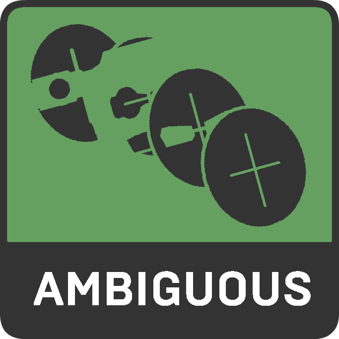
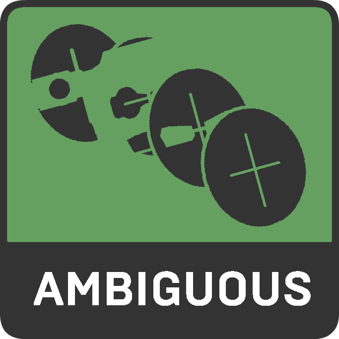

JUDGEMENT
DIPLOMATIC
RULEBASE
PRODUCTION
STYLIZED
NORMALCY


 


MadnessValues is, in essence, a personality-ish quiz that attempts to assign percentages for 12 different axes of values. You will be presented by a statement, and then you will answer with your opinion on the statement, from Strongly Agree to Strongly Disagree, with each answer slightly affecting your scores. At the end of the quiz, your answers will be compared to the maximum possible for each value, thus giving you a percentage. Answer honestly! Even if some questions may seem comical!
There are questions in the test.
There are four six independent axes - Judgement, Diplomatic, Rulebase, Production, Stylized, and You know... - and each has two opposing values assigned to them. They are:
CHARACTER
Those with higher Character scores believe that art should be separated from the artist, and that those who are relatively lets say bad, aren't a bad person.
JUDGEMENT
CONTENT
Those with higher Content scores believe in associating someone based off their content, ie. If you are good at art, you must be good yourself.
INDEPENDENT
Those with higher Independent scores are typically within their own sphere and have a sense of pride for their own group.
DIPLOMATIC
CONGLOMERATE
Those with higher Conglomerate scores believe that every part of the community despite differences are all under the same sphere.
EXPRESSIVE
Those with higher Expressive scores believe that an abundance of rules and restrictions in a server are not necessary or just outright incoherent, usually goes for those who prefer friend group-like scenarios rather than larger things like community servers.
RULEBASE
RESTRICTIVE
Those with higher Restrictive scores believe in administration above most things when it comes to group/server management, typically those who prefer this are from large community like servers rather than small friend group based ones.
TRADITIONAL
Those with higher Traditional scores believe in very conserved and less innovative but unique ways of animation and really dont go for more realism but for more of a classic form of Madness animation, art, sprites, etc.
PRODUCTION
INNOVATIVE
Those with higher Innovative scores typically believe in adding more new and innovative characteristics to animations/sprites, typically going for a more open and sometimes realistic style for all sorts.
DEFINED
quaker oats
STYLIZED
AMBIGUOUS
my finger slipped
VANILLA
quaker oats
NORMALCY
ESOTERIC
my finger slipped
In addition to matching you to the eight values, the quiz also attempts to match you to a common belief/ideology. This is a work in progress and is much less accurate than the values and axes, so don't take it too seriously. If you disagree with your assigned ideology, sucks to suck ig.